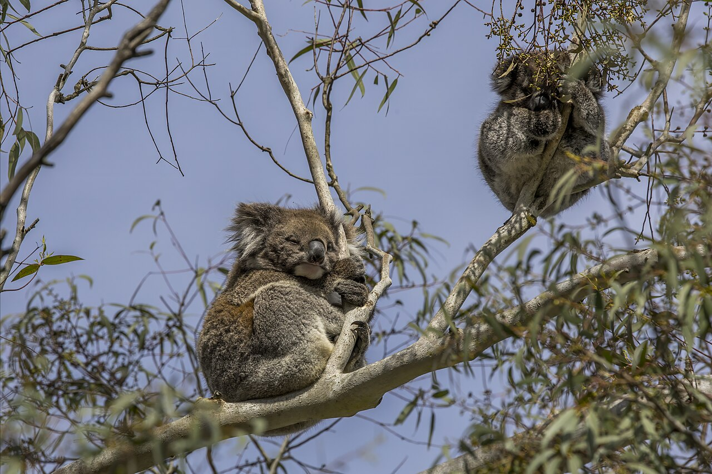
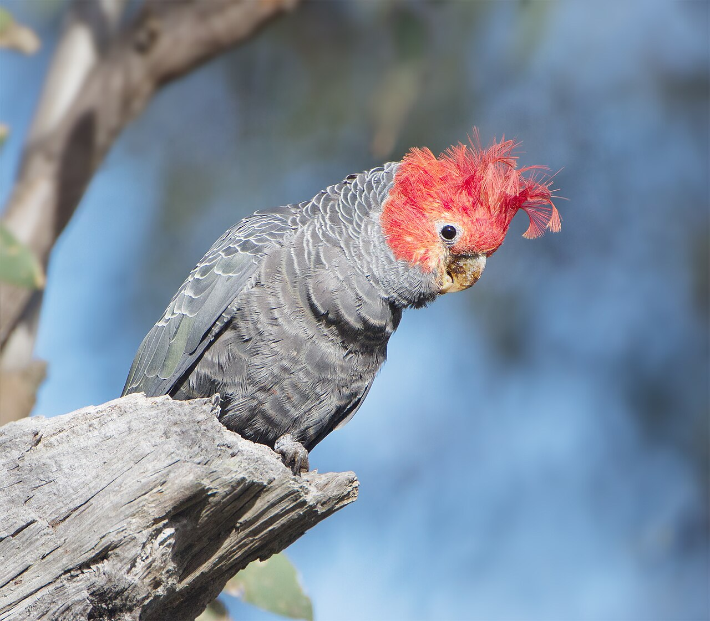
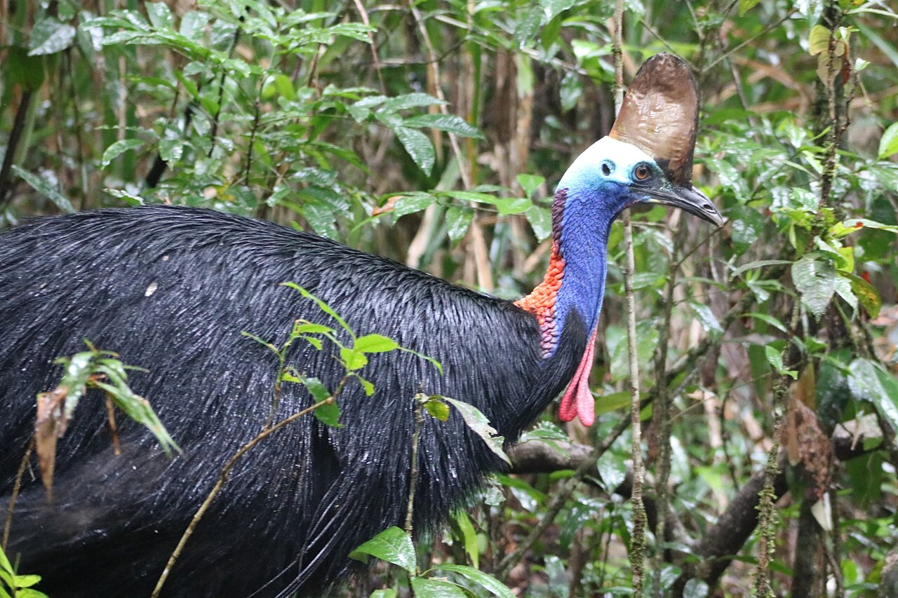
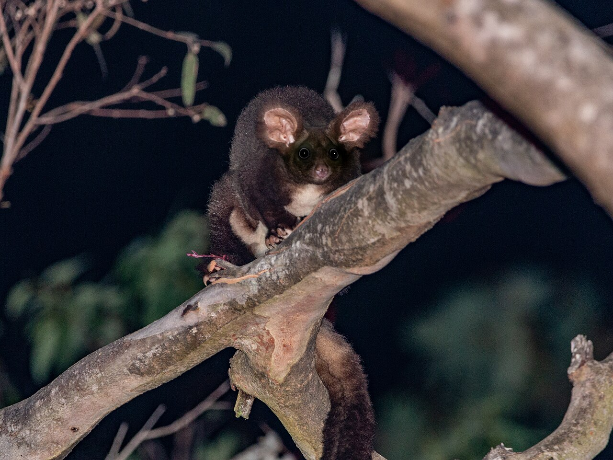
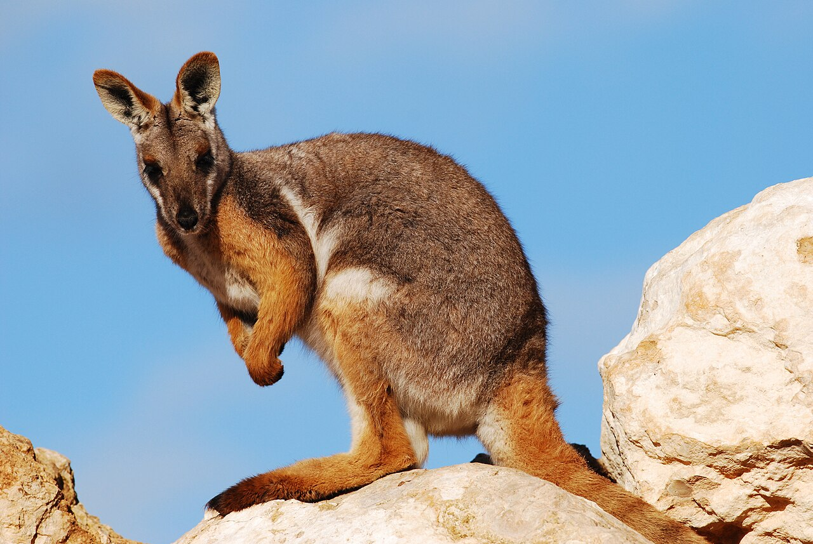
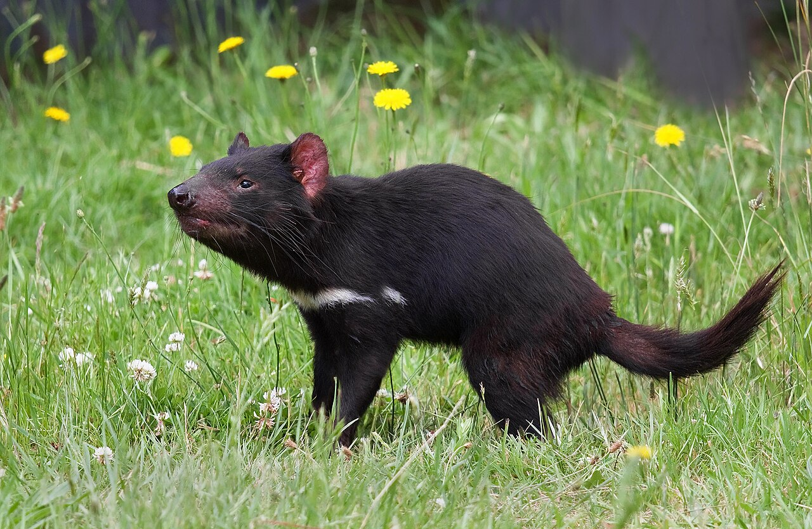
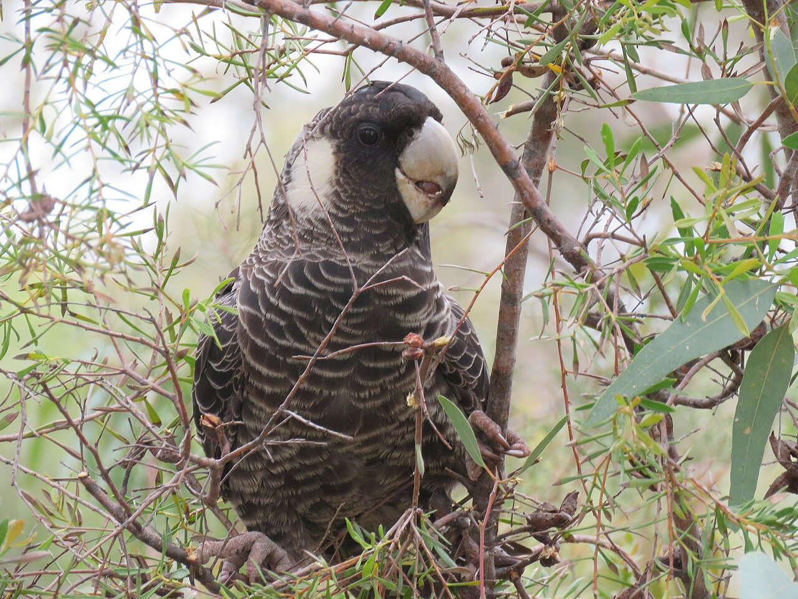
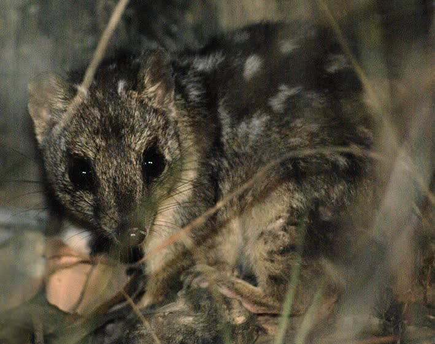

National Parks Wildlife
Do Australia's national parks protect its wildlife, and which parks matter most?
22.6%of Australia's land is protected
797national parks on the mainland and in Tasmania
700animal species and subspecies listed as threatened or extinct
7%of threatened-animal sightings fall within 50 km of their park
About this storyMore than a fifth of Australia's land is now protected, yet 700 of its animal species and subspecies are listed as threatened or extinct under national law. National parks are often seen as the front line of conservation. This story tests that idea by following eight of them, one in each state and territory, and asking whether the places we protect are the places our threatened animals actually live.
A protected area is land set aside mainly to conserve nature. Australia has committed to protecting 30% of its land by 2030, but progress is uneven. Because states differ so much in size, the fairest comparison is the share of each state's own land that is protected.
Source: CAPAD 2024, DCCEEW. State boundaries: ABS.
Nationally, 22.6% of land is protected. The Australian Capital Territory (56%) and Tasmania (43%) are well above that, while Queensland and New South Wales protect only about one hectare in every ten.
Why it mattersWhy the difference? Mostly size and land use. The Australian Capital Territory is tiny, and Namadgi National Park alone covers about a third of it, protecting the mountain catchments that supply Canberra's water. Queensland and New South Wales are among the largest and most heavily farmed states. There, every hectare set aside for nature has to be taken from grazing, cropping or forestry, so protection has grown far more slowly. It also means the answer to this story\'s question depends on where an animal lives: a threatened species in Queensland is far less likely to find protected land than one in Tasmania.
Percentages treat a small territory and a large state the same way. Comparing each state's share of Australia's land with its share of the nation's protected land shows where conservation is actually concentrated. If protection were spread evenly, each pair of dots would overlap.
How to read it: the grey dot is a state's share of Australia's land and the green dot is its share of all protected land. The longer the line between them, the bigger the mismatch.
Source: CAPAD 2024, DCCEEW.
Western Australia holds 45% of Australia's protected land, well above its 33% share of the land. Queensland is the opposite: it covers 22% of Australia but holds only 9% of its protected land.
Why it mattersProtection has followed open space. Western Australia contains enormous desert regions, such as the Great Sandy and Gibson deserts, where few people live and reserves covering millions of hectares could be created at once; half or more of each is now protected. Queensland's vast inland, by contrast, is mostly grazing country, and some of its regions have less than 2% of their land protected. So most of Australia's protected land lies in the west and the centre, far from where most Australians live, and a state-by- state view hides which landscapes are actually being protected.
Scientists divide Australia into 89 bioregions, areas with a similar climate, landforms, plants and animals, such as the Wet Tropics or the Nullarbor. Because each holds its own mix of wildlife, protecting a share of every region matters more than protecting large areas of just a few. The 85 regions on the mainland and in Tasmania are shaded below, with the darkest green marking those that already meet the 30% target.
Source: CAPAD 2024 bioregion summary and IBRA version 7, DCCEEW.
28 of the 85 bioregions already protect at least 30% of their land, mostly in the deserts and the tropical north. Yet 27 protect less than 10%, and together they cover about 40% of Australia. The least protected, such as the Mitchell Grass Downs and Brigalow Belt North (both about 2%), are inland grazing country.
Why it mattersA single percentage for a state hides these gaps. The best-protected regions are places that were never in high demand for farming: deserts, rugged ranges and the far north. The least protected are the fertile plains and grasslands that were among the first to be cleared or grazed, and each of them has plants and animals found nowhere else. That is why progress is best judged region by region. Reaching 30% nationally will mean little if it is achieved by adding more desert while the farming regions stay unprotected.
"Protected area" also covers several very different kinds of land, managed by governments, Traditional Owners and private landholders. National parks are only one of them.
Source: CAPAD 2024, DCCEEW.
Half of Australia's protected land is in Indigenous Protected Areas. National parks, the focus of this story, make up only about a quarter.
Why it mattersThis is a quiet but important shift. The first Indigenous Protected Area was declared only in 1997, yet together they now cover twice as much land as every national park in the country. They are managed by Traditional Owners, often through ranger programs that combine traditional knowledge, such as cultural burning, with modern conservation. Any honest answer to whether Australia protects its wildlife has to include them, even though this story follows national parks.
Although they make up only a quarter of protected land, national parks are the places most Australians know and visit. There are 797 of them on the mainland and in Tasmania, ranging from islands of a few hectares to deserts covering millions. The slider below the map traces how the network has grown since the 1880s.
One well-known national park was chosen in each state and territory, so every part of Australia is represented. Each is paired with a threatened animal it is known for, and both are followed through the rest of the story.
New South Wales
Royal
15,324 hectares

Threatened animalKoala
Victoria
Wilsons Promontory
48,202 hectares

Threatened animalGang-gang Cockatoo
Queensland
Daintree
116,221 hectares

Threatened animalSouthern Cassowary
Australian Capital Territory
Namadgi
77,872 hectares

Threatened animalGreater Glider
South Australia
Ikara-Flinders Ranges
95,572 hectares

Threatened animalYellow-footed Rock-wallaby
Tasmania
Cradle Mountain-Lake St Clair
161,676 hectares

Threatened animalTasmanian Devil
Western Australia
Stirling Range
113,605 hectares

Threatened animalCarnaby's Black-Cockatoo
Northern Territory
Kakadu
1,911,122 hectares

Threatened animalNorthern Quoll
Source: CAPAD 2024, DCCEEW. State boundaries: ABS.
The largest parks are in the dry centre and the tropical north, while the east coast is dotted with hundreds of small parks. Most of the network was created after 1950.
Why it mattersThe map reflects history as much as ecology. Many early parks were created close to cities, where people wanted places to visit, which is why the east coast is crowded with small parks. The giants came later, mostly in the outback and the far north, where land was available in large blocks and few people lived. Size matters for wildlife: larger parks can support bigger populations and shield animals from threats along their edges.
A long list of parks can give a misleading impression, because many small parks may still add up to little land. Comparing the size of every park within each state shows how much each one really protects.
How to read it: each dot is one park, and the black line marks the state's typical (median) park: half its parks are smaller and half are larger. Each step along the scale is ten times bigger than the last, so tiny and enormous parks fit on the same chart.
Source: CAPAD 2024, DCCEEW.
Queensland has the most national parks (320), but its typical park covers only about 3,400 hectares. The typical park in the Northern Territory is about 37 times larger.
Why it mattersQueensland's long list of parks gives a misleading impression of strong protection. Many of its parks are small islands and coastal patches, and the state still protects less than a tenth of its land, the lowest share in Australia. For wildlife, a few large, connected parks often do more than many small, scattered ones, because animals need room to move, feed and breed.
The Atlas of Living Australia is the country's largest record of wildlife: an online database of sightings reported by scientists, government surveys and members of the public. It shows what has been seen in each park, but not how many animals live there, and places that are easy to visit are recorded far more often.
Source: Atlas of Living Australia species lists, accessed 11 October 2026.
Royal, Australia's oldest national park, has 4,866 recorded animal species, about 13 times more than Kakadu.
Why it mattersRoyal's lead is real but exaggerated. Royal sits on the southern edge of Sydney, so it is visited by large numbers of bushwalkers, birdwatchers and school groups, many of whom log what they see. Kakadu is about three hours from Darwin and much of it is hard to reach, so far fewer sightings are recorded there. Scientists call this observer bias: a species list partly measures where people look, not only what lives there. The next chart puts a number on it.
Observer bias can be measured directly. Every sighting in the Atlas is stored as an observation record, so counting the records near each park shows how much attention it receives, and how closely that attention tracks the number of species found.
How to read it: each dot is one park; further right means more observation records and higher means more species. Both axes use a log scale, where each step is ten times the last, so the gap from 1,000 to 10,000 records looks the same as the gap from 10,000 to 100,000.
Source: Atlas of Living Australia species lists, accessed 11 October 2026.
Royal has 423,588 observation records, 133 times more than Kakadu's 3,194. Parks with more records generally list more species. The clearest exception is the Daintree, which records more than 1,100 species from fewer than 8,000 observations.
Why it mattersThe pattern is close to a straight line: the more often a park is recorded, the more species turn up on its list. That does not mean Royal is thirteen times richer in wildlife than Kakadu; it mostly means Royal has been searched far more thoroughly. The Daintree breaks the pattern because the Wet Tropics are among the most species-rich places in Australia, so even a modest number of observations reveals a great deal. Remote parks are likely to hold many species that simply have not been recorded yet.
The mix of animals recorded also differs between parks. Showing each park's species as shares of 100% allows parks with very different totals to be compared directly.
Source: Atlas of Living Australia species lists, accessed 11 October 2026.
In six of the eight parks, insects make up the largest share of recorded species. In Kakadu, birds make up 68%, the highest share of any featured park.
Why it mattersInsects are by far the most diverse animals on Earth, so wherever people take the time to photograph moths, beetles and butterflies, insects quickly dominate the list. That kind of close-up searching is most common in popular parks near cities. Birds are large, colourful and easy to identify from a distance, and Kakadu is famous among birdwatchers, so its list leans towards birds. Its insects have almost certainly been recorded less, rather than being scarce.
The species lists can also be checked against the national threatened species list. Each park's threatened land and freshwater animals are shown below by category, from critically endangered, the most urgent, to vulnerable.
Source: Atlas of Living Australia species lists, checked against the EPBC Act list.
Royal has the most threatened species recorded (37), followed by Wilsons Promontory (27) and the Daintree (20). The Daintree also has the most critically endangered species of any featured park (5).
Why it mattersEvery featured park supports at least eight threatened species, so each one plays a part in protecting animals at risk. Royal's high total, however, partly reflects how thoroughly it has been surveyed, just like its overall species count. A fairer comparison is the share of each park's species that are threatened, and that tells a very different story.
A park with many species is not necessarily the most important for animals at risk. Ranking the parks twice, first by species recorded and then by the share of those species that are threatened, reveals a very different order.
How to read it: the left column ranks the parks by species recorded (1 = most) and the right column by the share that are threatened (1 = highest). A line rising from left to right means the park ranks higher for threatened species than for species overall.
Source: Atlas of Living Australia species lists, checked against the EPBC Act list.
The ranking flips. Kakadu has the fewest recorded species but the highest share under threat (15 of 331, or 4.5%), while Royal drops from first to last (0.8%).
Why it mattersKakadu's result shows why remote parks matter. Northern Australia has lost many of its small mammals in recent decades, including the Northern Quoll, so even a short species list there includes a high share of animals at risk. Judged by how many species it records, Kakadu comes last; judged by the share under threat, it comes first. For threatened wildlife, remote parks may matter far more than their species counts suggest.
Australia's national environment law, the Environment Protection and Biodiversity Conservation Act 1999 (EPBC Act), keeps the official list of species at risk. Each is placed in a category, from "vulnerable" (at high risk in the medium term) to "critically endangered" (at extremely high risk in the immediate future), and the list also records species already extinct.
How to read it: each row is an animal group and each column a category, from most severe on the left to least severe on the right. Each square shows the number of species; darker red means more.
Source: EPBC Act List of Threatened Fauna, DCCEEW.
Birds and mammals have the most listed species. Mammals stand out for the worst reason: 39 are already extinct, more than all other animal groups combined.
Why it mattersAustralia has one of the worst records of mammal extinction in the world. Most losses since European settlement have been small and medium-sized ground-dwelling mammals, such as bandicoots, bettongs and hopping mice, which are easy prey for introduced cats and foxes. Land clearing has added to the pressure by removing the shelter they rely on. Many of the 113 mammals still listed face the same threats, which raises the final question: are threatened animals actually living inside the parks meant to protect them?
If national parks were protecting threatened animals well, sightings of those animals would cluster around the parks. To test this, one threatened animal associated with each featured park was chosen, and every recent sighting of it was mapped.
How to read it: Australia is divided into squares of half a degree, roughly 40 to 55 km across. Darker squares had more sightings, and circles mark the featured parks. Choose an animal from the menu below the map to zoom in on it.
Source: Atlas of Living Australia occurrence records, downloaded 11 October 2026. State boundaries: ABS.
Only 7% of sightings fall within 50 km of the animal's featured park. The Southern Cassowary (26% near Daintree) and the Yellow-footed Rock-wallaby (23% near Ikara-Flinders Ranges) are the most closely tied to their parks. Fewer than 1 in 50 Greater Glider and Gang-gang Cockatoo sightings are near theirs, and no recent Northern Quoll sightings were recorded near Kakadu.
Why it mattersThe animals most tied to their parks are those with small ranges. The cassowary lives mainly in the rainforests of far north Queensland, and the rock-wallaby clings to rocky ranges such as the Flinders. Wide-ranging animals tell a different story: Koalas, Greater Gliders and Gang-gang Cockatoos are seen across forests, farmland and even suburbs, much of it far from any national park. The Northern Quoll result likely reflects its steep decline in Kakadu, caused by feral cats, changed fire patterns and poisonous cane toads. These animals do not stop at park boundaries, and neither can their protection.
Do Australia's national parks protect its wildlife? Partly. They protect important strongholds, such as the Daintree for the Southern Cassowary, and remote parks like Kakadu hold a high share of threatened species even though they record fewer species overall. These are the parks that matter most for animals at risk.
But national parks cover only a quarter of Australia's protected land, and more than nine in ten sightings of the threatened animals in this story are more than 50 km from their featured park. Protecting Australia's wildlife therefore depends on more than national parks: Indigenous Protected Areas, private conservation land, and the farms, forests and towns around parks all play a part.
A note on the data: sightings depend on where people look. Parks near cities, like Royal, are visited and recorded far more often than remote parks, so the true picture in remote areas may differ. Species counts use a 10 km radius around each park's centre point, which can include land just outside the park.